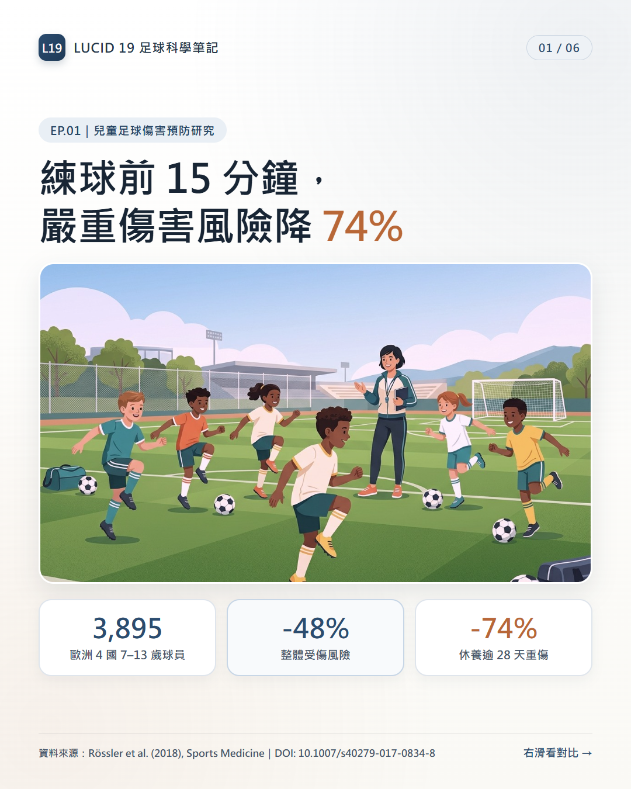
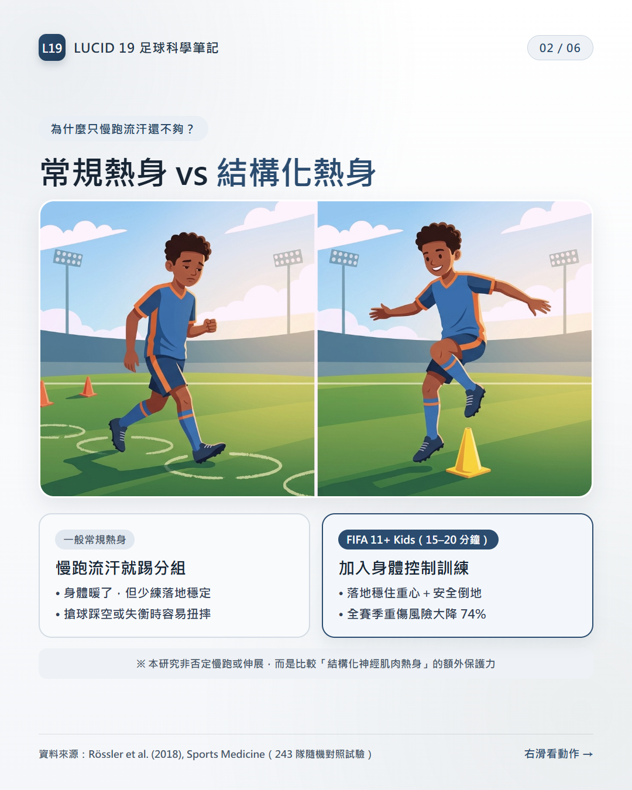
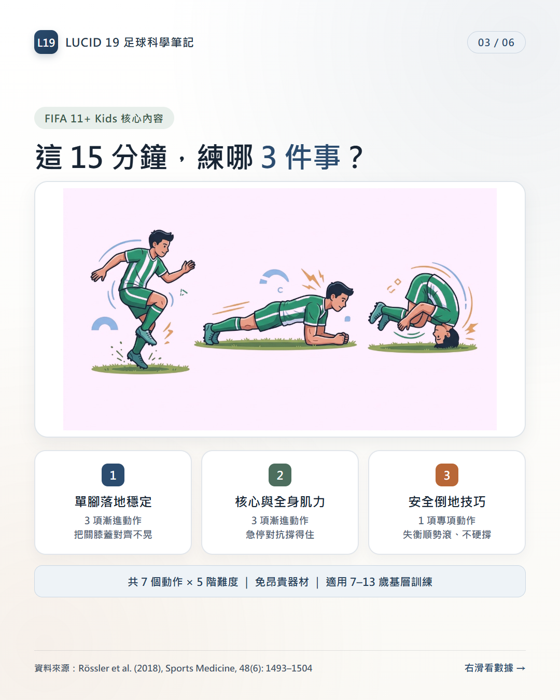
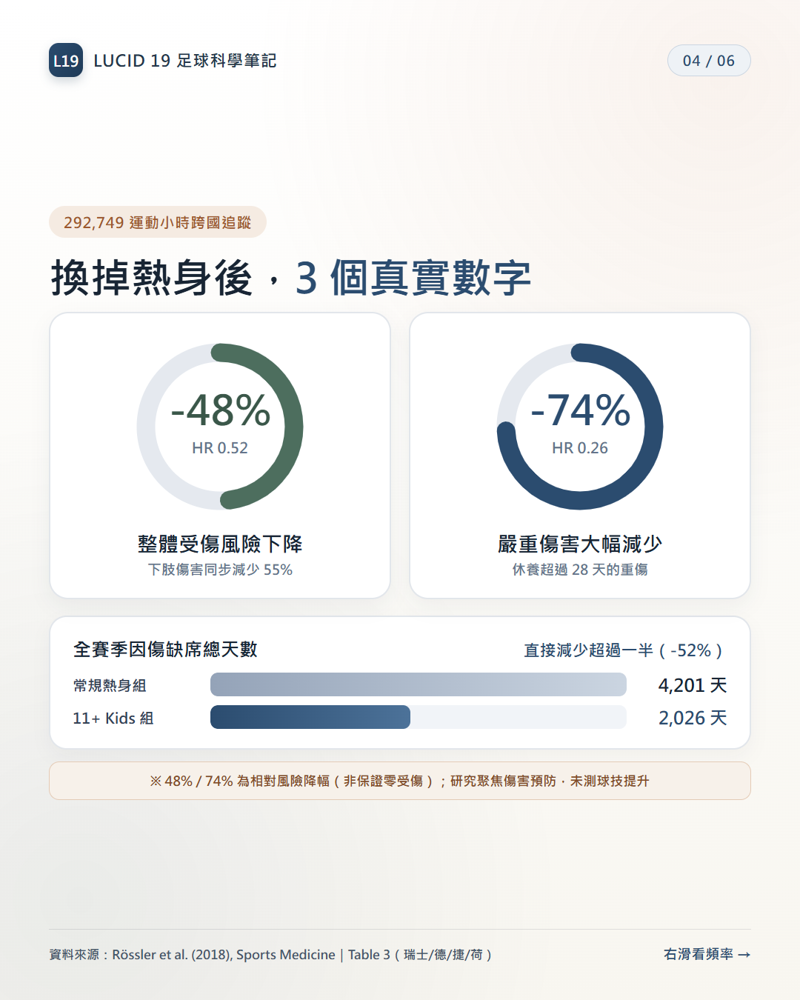
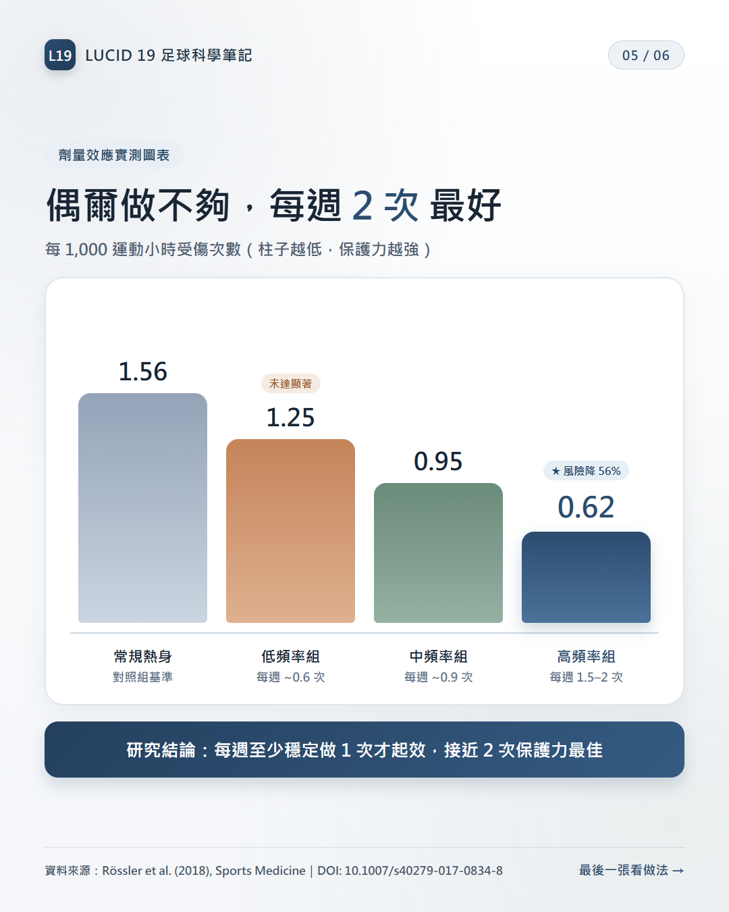
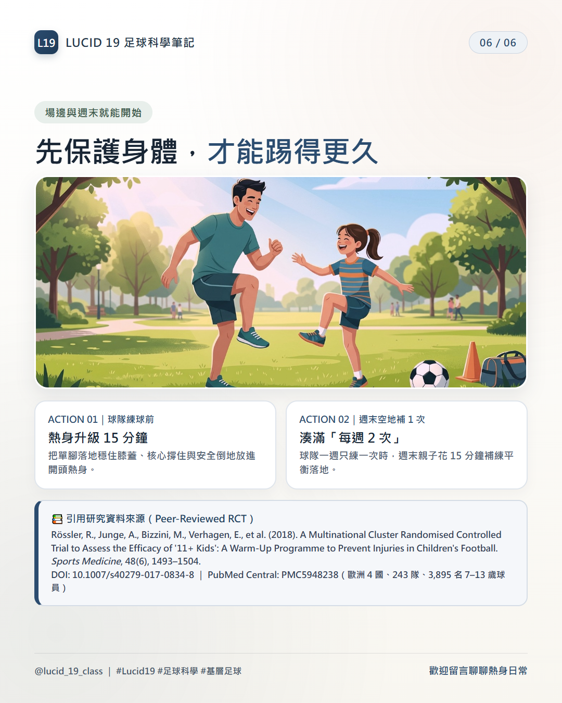

Lucid 19 足球科學筆記 EP.01｜FIFA 11+ Kids
Rössler et al. (2018), Sports Medicine, 48(6): 1493–1504 ｜ DOI: 10.1007/s40279-017-0834-8






Rössler et al. (2018), Sports Medicine, 48(6): 1493–1504 ｜ DOI: 10.1007/s40279-017-0834-8





